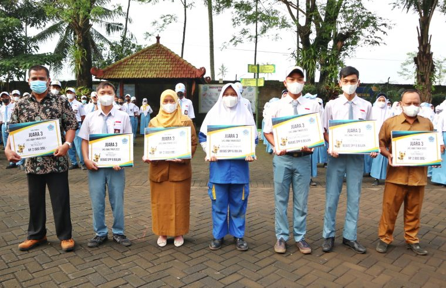
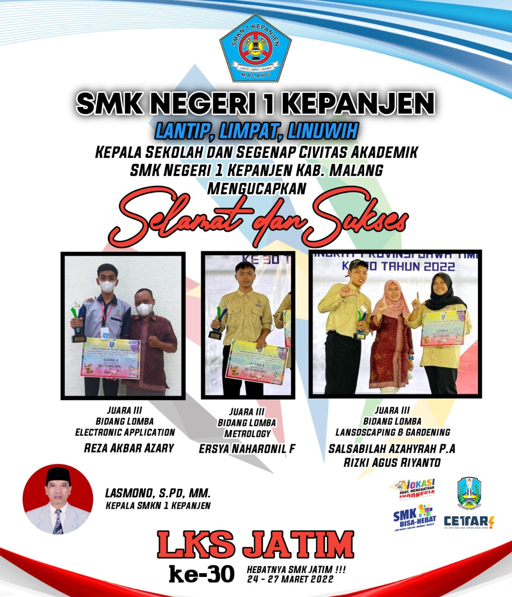

MENGHARUMKAN NAMA SMKN 1 KEPANJEN, KONTINGEN KANESA MASUK NOMINASI 3 BIDANG LOMBA LKS TINGKAT PROVINSI JAWA TIMUR 2022


Pada ajang LKS Provinsi Jawa Timur ke-30 pada tanggal 24-27 Maret 2022 SMKN 1 Kepanjen berhasil mendapatkan 3 nominasi pada 3 bidang lomba yang dilaksanakan menyebar di seluruh kota wilayah Jawa Timur.